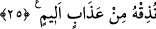
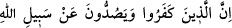
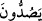
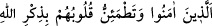
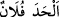

25. İnkâr edenler, Allah’ın yolundan ve -yerli, taşralı- bütün insanlara eşit (kıble
veya mâbed) kıldığımız Mescid-i Harâm’dan (insanları) alıkoymaya kalkanlar
(şunu bilmeliler ki) kim orada (böyle) zulüm ile haktan sapmak isterse ona acı
azaptan tattırırız.
“İnkâr edenler, Allah’ın yolundan” yani insanları Allah’a itâattan, O’nun dînine
girmekten “ve -yerli, taşralı-” ister Mekkeli ister âfâkî (dışarıdan gelmiş) kim olursa
olsun “bütün insanlara eşit” kıble veya mâbed “kıldığımız Mescid-i Harâm’dan
(insanları) alıkoymaya kalkanlar” azâba uğratılacaklardır.
Kâşifî der ki: “Meşhur olan görüş, bu alıkoymanın Hudeybiye günü olduğudur. Çünkü
Mekkeliler o zaman Hz. Peygamber (a.s.) ve ashâbının Kâbe ve mescidi tavaf
etmelerine engel oldular.”
Mescid-i Harâm ile kasdedilen Mekke’dir. Ya da mü’minleri Mescid-i Harâm’ı
tavaftan men edenler demektir. “Harâm” her yönden muhterem/hürmete lâyık demektir.
Çünkü orasının avı avlanmaz, dikeni kesilmez ve kan dökülmez. Hurmetine tâzim
göstermek ve orada ibâdetleri yerine getirmek konusunda orada ikâmet eden ile oraya
uzaktan gelen eşittir. Gece ve gündüz saatlerinden birinde orada ikamet eden
Mekkelinin taşradan geleni men etmesi veya bunun aksi mümkün değildir. Mekke’de
mukîm olan ile dışarıdan gelen birdir. Yani, yabancı ve şehirli olanın Kâbe’ye karşı
tazim merasimini edâ etmeleri ve menâsikini yerine getirmeleri eşittir.
Mescid-i Harâm’ın bu şekilde vasfedilmesi, insanları ondan alıkoyanları ziyâdesiyle
kötüleyip ayıplamak içindir.
“__WORD__ ifâdesinde “__WORD__ fiilinin muzâri/geniş zaman olması
ile şimdiki ve gelecek zaman değil süreklilik kasdedilmiştir. Böylece sanki “İnkâr
edenler ve işleri Allah’ın yolundan … alıkoymak olanlar…” buyrulmuş olmaktadır.
Bunun benzeri şu âyettir: “
Bunlar, îmân edenler ve
gönülleri (sürekli olarak) Allah’ın zikriyle sükûnete erenlerdir. (er-Ra’d, 13/28)”
Bâdiyede/çölde oturan kimseye “bâdin” denir. İçinde olan her şeyi ortaya
koyan/gösteren her mekâna “el-bâdiye” denir.
Onlar şunu bilmeliler ki “kim orada” Harem’de “(böyle) zulüm ile haktan sapmak
isterse ona acı azaptan tattırırız.” Yâni orada bulunan kimsenin bütün istediklerinde
âdil olması zorunludur.
Râğıb der ki: “__WORD__ “Falan haktan meyletti/saptı.” demektir. İlhâd iki kısımdır.
Allah’a ortak koşmak, sebepleri ortak koşmak. Birincisi îmânı ortadan kaldırır ve bâtıl
kılar. İkincisi îmânı zaafa uğratır, fakat bâtıl hâle getirmez. Bu âyette bahsedilen de bu
ikinci türdendir. Çünkü, Mekke’de iyilikler katlandığı gibi kötülükler de katlanır. Yâni
madem ki Mekke-i muhtereme iyiliklerin fazla olarak karşılığının verildiği yerdir ve